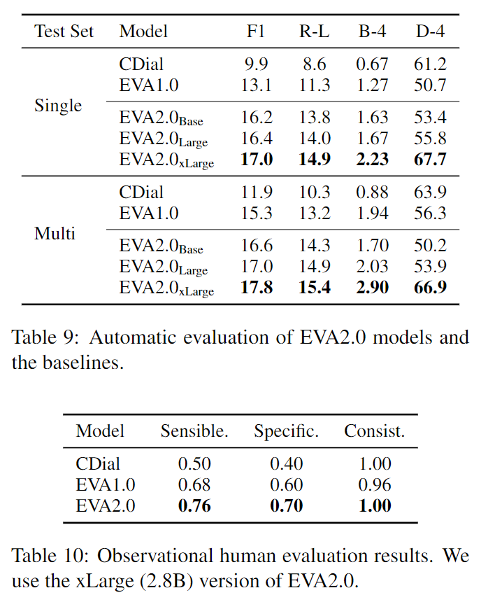

智源 EVA2.0: 聊天机器人 EVA 加强版
简介
EVA 2.0 是智源、清华在论文《EVA2.0: Investigating Open-Domain Chinese Dialogue Systems withLarge-Scale Pre-Training》中提出的对话模型，论文于 3.17 登陆 arxiv，也就是一周前。EVA2.0 旨在探究数据质量、模型架构、训练方法、解码策略等因素的影响，而不是进一步扩张模型和数据。经过以上优化后，仅 300M 参数的 EVA 2.0 就达到了 2.8B 的 EVA 1.0 的水平。代码和模型见 thu-coai/EVA。
数据
论文提出了相关性、通顺性、娱乐性等指标用于分析数据质量，并进行数据处理。
质量指标
相关性
相关性可以反映上下文和回复间的连贯性、参与度，可以通过一些直觉公式进行估计，或者训练一个 NLU 分类模型。
直觉来看，上下文和回复越相关，同时包含在二者中的单词越多。因此，这一部分分数定义为上下文 \(C\) 和回复 \(R\) 之间的单词覆盖率，具体公式为: \[ S_1=\sum_{w_i\in C,w_j\in R} dist(w_i,w_j)^\tau I(w_i=w_j) \] 其中，\(dist(w_i,w_j)\) 为 \(w_i\) 和 \(w_j\) 在对话中的轮次距离，\(\tau\) 用于调整分数。
训练模型的方法，论文在 LCCC 数据集上训练了一个 \(BERT_{BASE}\) 模型，用于判别上下文和回复是否对应，在测试集上得到了 93.0% 的准确度和 0.86 的 F1 分数。这一部分分数公式如下，也就是分类的 \(logits\)。 \[ S_2=logp(1|C,R) \] 很显然，神经网络的方法更健壮一些。训练过程和细节论文未提，猜测应该就是正例 + 随机构建负例进行分类吧。不过这里也有一个有趣的地方。LCCC 数据集数据集是 BERT 分类 + 规则过滤进行清洗的，BERT 是在人工标注的 10w 条数据上训练的。EVA 1.0 版本中的 WDC-Dialog 只提到了规则过滤。2.0 从 LCCC 数据集去训练分类器，相当于是逆向了 LCCC 的分类模型，省去了人工标注数据的成本。
通顺性
论文使用 kenlm，一个统计语言模型工具，来计算每个句子的概率，对话的通顺分数是每轮次分数之和，公式如下： \[ S_3=-\frac1n\sum logP(w_1^i,w_2^i,\dots,w_{|u_i|}^i) \]
娱乐性
由于中文社交媒体上有很多娱乐明星的粉丝（点名微博了属于是），相关对话中会包含一些不想要的信息，并且这些语言习惯也和正常聊天有所差异。因此，论文计算娱乐明星在对话中的占比，计算娱乐分数。
数据改进
- 数据集改进：作者发现有些数据集不适合开放域对话场景，例如京东客服对话 JDDC 数据集，使用它训练会导致说话口吻像电商客服，因此将其从 WDC-Dialog 中移除。
- 回复数量改进：来自微博等社交媒体的数据集中，存在一个上下文对应相当多回复的情况。这些回复非常相似有时会严重影响性能。因此作者为每个上下文设置了最大回复数量并进行过滤。
- 规则过滤：作者在 EVA 1.0 的规则上做了进一步的改进，例如将繁体字转为简体字，移除不合理的连续标点符号等。
- 基于分类器的过滤：根据质量分数的加权 \(S=\alpha S_1+\beta S_2+\gamma S_3\) 对样本进行过滤，去除质量分数低于阈值的样本。
数据扩展
来自社交媒体的数据会夹杂很多的流行语，而它们在日常对话中并不常见，这会导致偏差。因此，作者还从公开来源收集了以下四种数据，共计 12GB。
- 电影和电视剧的对话字幕
- 小说和故事中的对话
- 百度知道的问答对
- 已有的公开众包对话：DuConv，KdConv，DuRecDial，NaturalConv
数据统计信息
下表展示了 EVA 2.0 和 1.0 的数据集对比。可以看到 EVA 2.0 的数据集不足 1.0 版本的 \(1/3\)，但显著提升了质量。相关性、通顺性的提升与数据调整中的过滤方式大致有个对应关系，例如规则过滤主要改善通顺性。另外，个人感觉数据调整中会根据质量分数过滤，再采用质量分数来评估似乎欠妥。可能再各自随机采样样本进行人工标注更有说服力一些。
模型
模型还是 Seq2Seq 的 Transformer，不过和 EVA 1.0、t5 不一样的是，使用的是 scaled Attention，即计算 Attention 的时候除以了 \(\sqrt d\)。论文主要讨论了两个模型的两个配置：层数和角色信息。
基于 Seq2Seq 的对话模型的编码器和解码器层数往往不是一致，解码器要比编码器更深以达到更好的生成效果。但是，更深的编码器也能提高对话上下文理解能力。因此，论文在控制参数规模情况下，尝试了不同的层数比例。
近期工作指出，在长对话中，预训练模型可能会混淆它们的角色，因为模型是在角色信息复杂的社交媒体数据上训练得到的。因此，需要为对话模型添加角色信息保证一致性。例如，PLATO-XL 在多角色对话中添加了角色嵌入。不过由于 WDC-Dialog 数据集角色信息的缺失（例如字幕中一般不会包含角色信息），如果要添加角色信息，只能强制将对话认定为两个角色间进行的对话。论文同时使用了角色嵌入和角色标识符并测试效果。
预训练
论文研究了两种预训练方法：从头开始预训练或者从长文档预训练的模型再进行预训练。直觉来看，在长文档上预训练的模型已经学到了一些知识。但是由于文档和对话的差异性，不清楚这对对话任务是否会起到正面作用。
解码策略
论文在上尝试了以下几种不同的解码策略。虽然有研究在英文对话机器人上对这些策略进行了实验，论文认为解码策略是语言相关的，中文的结论可能不同。
- 贪心搜索（Greedy Search）：朴素解码，每步选概率最大的 token，公式为 \(y_t=\arg\max_{y_t} P(y_t|x;y_{<t})=softmax(h_t)\)
- 采样（Sampling）：每步根据概率分布采样 token，公式为 \(y_t\sim P(y_t|x;y_{<t})=softmax(h_t/T)\)，\(T\) 为温度系数，增大低概率 token 被采样的概率。
- 光束搜索（Beam Search）：贪心搜索的改进，避免局部最优。同时维护多个解码序列，最终选择概率最大的序列。
- 长度控制（Length Control）：朴素解码策略倾向于生成短而通用的序列，长度控制可改善这一问题，常与光束搜索搭配使用。最小长度约束方法：在解码时将 <EOS> 的概率置 0 直至达到最小长度要求。长度惩罚：光束搜索时对候选序列分数除以 \(l^\alpha\)，其中 \(l\) 为序列长度，\(alpha\) 越高越偏向长序列（beam search 的 score 是 \(logp\)，为负数）。
- 处理重复（Handling Repetitions）：语言模型生成普遍会出现重复现象。No-Repeat-N-Gram 策略禁止生成对话历史中存在的 n-gram。
实验
- 自动评估指标：uni-gram F1 (F1), ROUGE-L (R-L),BLEU-4 (B-4), distinct 4-grams (D-4)
- 人工评估指标：合理性、特异性、一致性
层数
6-18 代表编码器 6 层，解码器 18 层。表格可以看出，层数平衡的架构是最优的。
角色信息
还是上面的表格，加入角色信息后性能有所下降。作者解释为由于数据集中角色信息的缺失，强迫模型将多角色对话认作两个角色间进行的对话反而会带来反面效果。
预训练策略
下两表为两种训练策略的自动和人工评估结果。可以看出，在文档预训练的模型继续训练的模型只在知识指标上效果更优，在对话指标上都不如从头训练模型。
解码策略
下两表为解码策略的自动和人工评估结果。贪婪搜索默认与 no-repeat-n-gram 结合起来，因为简单的贪婪搜索通常会导致重复。
结论：
- 没有在所有指标上最优的解码策略
- 采样能够生成多样的回复，但会损失合理性
- 无重复 n-gram 的简单贪心解码在人类评估中产生了令人惊讶的良好性能
- 模型在最小长度约束下倾向于生成自相矛盾的响应（与英文不同）
- 光束搜索结合采样、长度惩罚、禁止重复取得了相对均衡的性能
最终评估
论文将 EVA 2.0 和 1.0、CPM 进行了对比。结果如下两表。baseline 还是有点少。

举个栗子
下面举几个栗子来具体展示一下。可以看到，EVA 2.0 虽然有时能取得较好的对话效果，但还是会有不一致、幻觉、不安全、缺少同理心这些问题。这正是谷歌 LaMDA 想要解决的问题，可以参考我的另一篇博客谷歌 LaMDA：高达 137B 参数的 “全能型” 聊天机器人。
好
不一致
幻觉
不安全
缺少同理心
总结
这篇论文还是蛮有价值的，讨论了模型规模和数据规模之外，影响模型性能的因素。类似 RoBERTa 之于 BERT，可以作为炼丹的参考。不过读完之后我最关心的几个问题还是没有解决：
- 模型架构上，PLATO 采用的 unified Transformer 和 EVA 的 Seq2Seq，孰优孰劣？虽然有论文做过实验，但是其模型规模、数据规模都达不到预训练模型的水平。
- 基线对比上，还是没有跟 PLATO-XL 进行比较。虽然感觉 EVA 2.0 大概率是比不过 PLATO-XL 的，但还是想了解一下差距、可能的解释、改进等。